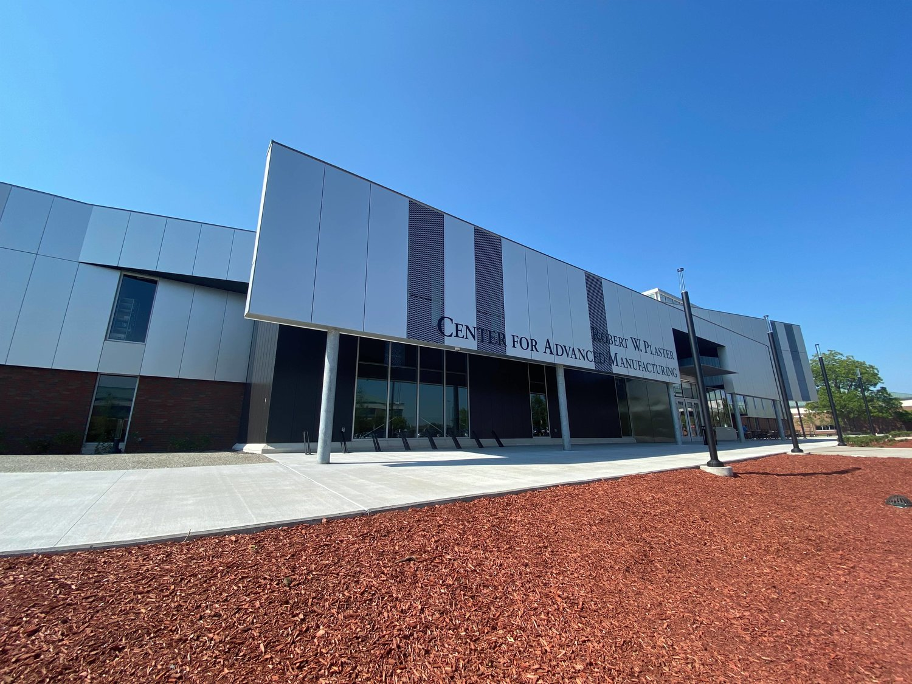

A zombie outbreak has started on campus at OTC. You're located in the Tech ed building and the outbreak started at the info commons west. You and your classmates can lock down the building but you need to move quick.
Survival Rules
- Stay inside the safe zone as much as possible: Reduces chance of infection.
- Wear protective layers: Reduce the chances of a bite reaching the skin and causing infection.
- Stay hydrated: Prevents you from being a liability. If you pass out, you're a goner.
Survival Kit
- Lots of Dr. Pepper: Having a large supply will ensure you stay hydrated and keep your energy up. This also helps with morale.
- A Mac book: Not only great for all your computer needs but also doubles as a blunt weapon to beat the crap out of zombies.
- A Cougar CAT II A1: A BA armored truck. Sturdy, reliable and the most sylish way to survive the apocolypse.

The Safe Zone
The safe zone will the tech ed building and HQ will be Mrs. Markley's room (because she has the Dr. Pepper). Doors will be barricaded with 2 entry control (EC) points. The structure is solid and has plenty of windows to monitor the outside world.

Pi Day Challenge
If you haven't noticed yet there is no mention of food in this guide. It is your job to come up with a means of growing food inside the building or planning raids to scavenge food from surrounding areas.